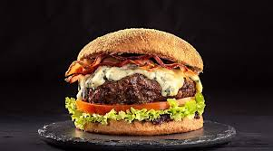

Go back to main page
Hamburguer

Description:
Hamburgers are quick, tasty meals that can be made with beef, chicken, or even vegetarian options. Ideal for a casual lunch or dinner.
Ingredients:
- 500g (1 lb) ground beef
- Salt and pepper to taste
- 1 hamburger bun
- Cheese, lettuce, tomato, and sauces as desired
Steps:
- Season the meat
- Shape it into patties
- Grill on both sides until browned
- Assemble the sandwich with the bun, burger, cheese, and your favorite toppings.